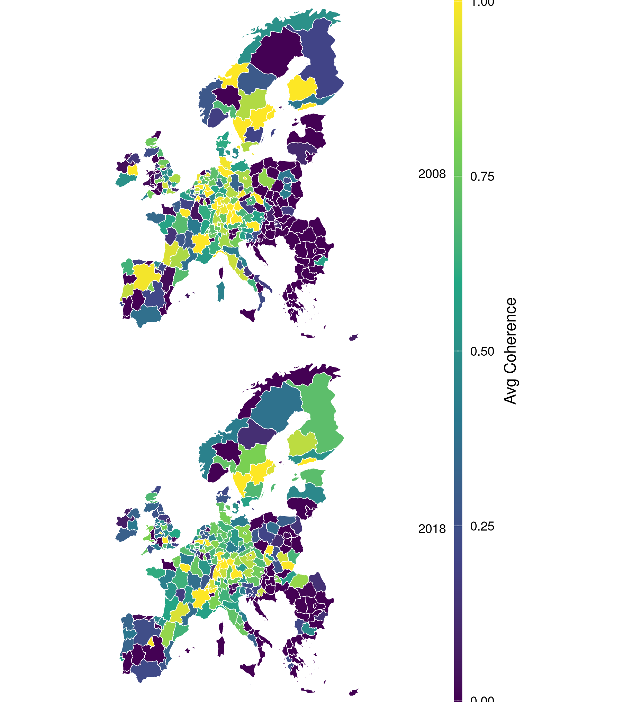
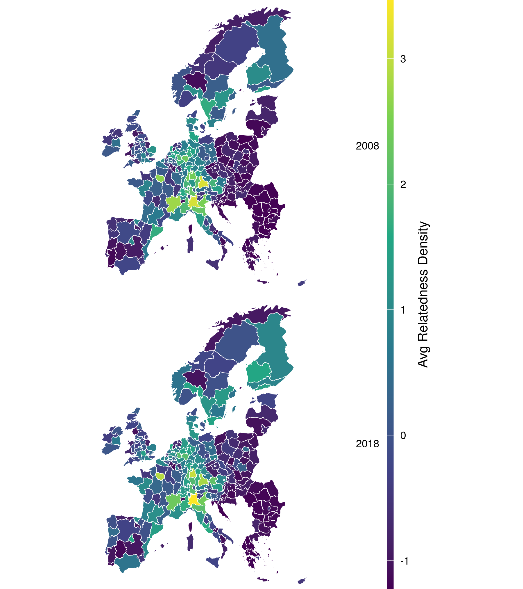
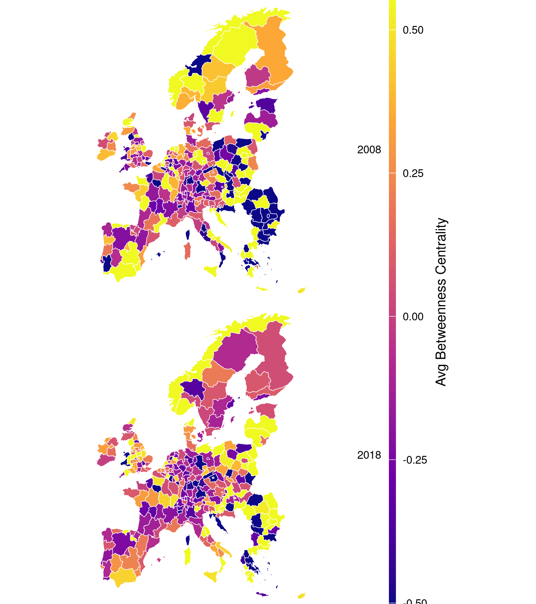
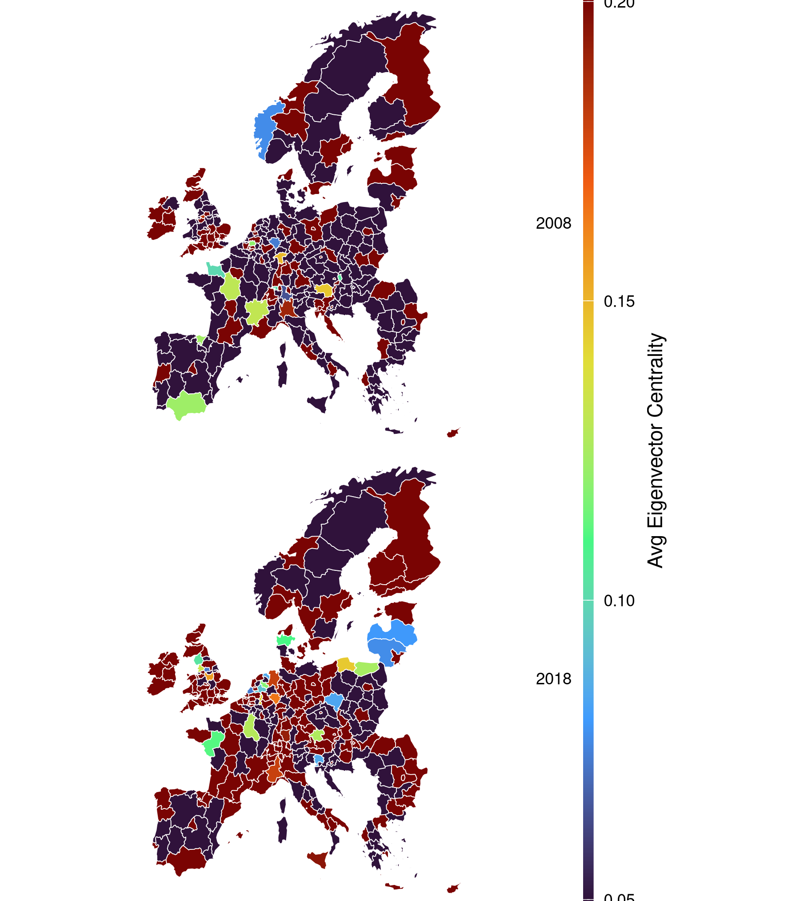
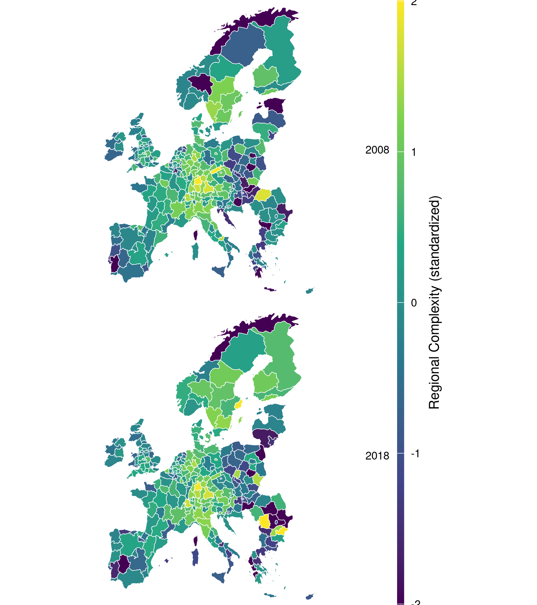

| Machine learning literature | Relatedness literature | Our own claim |
|---|---|---|
| Can it handle sparse, high-dimensional portfolios? | ||
| Feature subsampling at each split avoids the small-n, large-p problem (Breiman 2001) | Used on sparse export and patent baskets (Tacchella et al. 2023; Albora et al. 2023) | That NUTS2 portfolios are sparse in exactly this way |
| Can it capture what linear aggregation cannot? | ||
| Importance decomposes across all interaction terms (Louppe et al. 2013) | Summing pairwise relatedness is an oversimplification (Tacchella et al. 2023) | Reading these interactions as capability complementarities |
| Can it stay interpretable? | ||
| Importance aggregates each predictor's contribution across trees (Breiman 2001) | Importances can form a technology network (Fessina et al. 2024) | Deriving both constructs from one estimation |
| Is it stable at our sample size? | ||
| Bagging reduces the variance of single trees (Breiman 1996) | — | Moderate n per technology-year model |
| What can it not do? | ||
| Gini importance is biased; correlated features mask one another (Strobl et al. 2007; Louppe et al. 2013) | — | A weak FITS edge may reflect masking, not absence of dependence |
Appendix A — Methodological details
A.1 Notation
Table A.1 collects the symbols used in this dissertation and where each is defined.
| Symbol | Meaning | Eq. / Sec. |
|---|---|---|
| Indices and sets | ||
| \(t, t', s\) | Technologies (4-digit IPC classes); \(s\) is used for predictor technologies | Sec. 3.1 |
| \(r\), \(y\), \(c\) | Region (NUTS2), year, technology category (IPC section) | Sec. 3.1 |
| \(\mathcal{T}, \mathcal{R}, \mathcal{Y}, \mathcal{C}, \mathcal{K}\) | Sets of technologies, regions, years, categories and countries | Sec. 3.1 |
| \(N_T, N_R, N_Y, N_C, N_K\) | Number of technologies, regions, years, categories and countries | Sec. 3.1 |
| Specialisation | ||
| \(X_{r,t,y}\) | Patent count of region \(r\) in technology \(t\) in year \(y\) | Eq. 3.1 |
| \(\text{RTA}_{r,t,y}\) | Revealed technological advantage | Eq. 3.1 |
| \(\mathbf{R}^{(y)}\) | RTA matrix for year \(y\) | Eq. 3.2 |
| \(z_{r,t,y}\) | Binary specialisation, 1 if \(\text{RTA}_{r,t,y} \geq 1\) | Eq. 3.3 |
| Relatedness (benchmark) | ||
| \(c_{t,t'}\), \(c_t\) | Co-occurrence counts: patents for association strength and cosine, regions for MCP | Eq. 3.4, 3.6 |
| \(\phi_{t,t'}\) | Relatedness between \(t\) and \(t'\) (association strength, cosine, MCP) | Eq. 3.4, 3.5, 3.7 |
| \(\mathcal{T}_r\) | Technologies in which region \(r\) specialises | Eq. 3.8 |
| \(\Phi_{r,t}\) | Relatedness density | Eq. 3.8 |
| Random Forest | ||
| \(\delta\) | Lag between features and outcome (4 years) | Sec. 3.4.2 |
| \(y^*\) | Target (prediction) year | Eq. 3.14 |
| \(B\), \(h_b\) | Number of trees; tree \(b\) | Eq. 3.11 |
| \(\nu\) | Node of a tree | Eq. 3.9 |
| \(G(\nu)\), \(\Delta G\) | Gini impurity; its decrease at a split | Eq. 3.9, 3.10 |
| \(I_t(s)\) | Importance of technology \(s\) in the model for target \(t\) | Eq. 3.13 |
| Potential and FITS | ||
| \(p_{r,t,y}\) | Regional technological potential (predicted probability) | Eq. 3.11 |
| \(W_{t \to t'}\) | FITS edge weight: normalised importance of \(t\) in the model for \(t'\) | Eq. 3.16 |
| Coherence | ||
| \(E^{\leftarrow}_{t,c}\), \(E^{\rightarrow}_{t,c}\) | Incoming and outgoing embeddedness of technology \(t\) in section \(c\) | Eq. 3.17, 3.18 |
| \(S_{r,c}\) | Technologies of section \(c\) in which region \(r\) specialises | Eq. 3.19 |
| \(E^{*\leftarrow}_{r,c}\), \(E^{*\rightarrow}_{r,c}\) | Incoming and outgoing embeddedness of region \(r\) in section \(c\) | Eq. 3.20, 3.21 |
| \(\mathbf{v}_t\), \(\mathbf{v}_r\) | Embeddedness profiles of the technology and the region | Eq. 3.23, 3.24 |
| \(\text{Coherence}_{r,t}\) | Cosine similarity of the two profiles | Eq. 3.22 |
| Empirical models | ||
| \(p^*_{r,t,y}\) | Logit of potential | Eq. 4.1 |
| \(P_{r,y}\) | Average regional potential | Eq. 4.2 |
| \(\text{Entry}_{r,t,y+1}\) | Entry into specialisation in the next period | Eq. 4.3 |
| \(\mathbf{X}\), \(\boldsymbol{\beta}\) | Covariates and their coefficients | Eq. 4.4 |
| \(\mathbf{Z}\), \(\boldsymbol{\gamma}\) | Controls in Model 0 and their coefficients | Eq. 4.3 |
| \(\alpha_r\), \(\alpha_y\) | Region and year fixed effects | Eq. 4.3, 4.4 |
| \(\zeta_y\) | Year effects in Models 2 and 3 | Eq. 4.5, 4.7 |
| \(u_c\), \(u_{r\mid c}\) | Country and region-within-country random intercepts | Eq. 4.5 |
| \(w_{ij}\), \(\mathbf{W}\) | Spatial weights (5 nearest neighbours) and the weights matrix in Model 3 | Eq. 4.6, 4.7 |
| \(\rho\) | Spatial autoregressive parameter | Eq. 4.7 |
| \(\delta\) (Model 3) | Spatial error parameter | Eq. 4.8 |
| \(\varepsilon\) | Error term | Eq. 4.4 |
| Distance | ||
| \(d(s,t)\) | Distance between two technologies in FITS | Eq. A.1 |
| \(\text{rawdist}_{r,t,y}\) | Distance from the regional portfolio to technology \(t\) | Eq. A.2 |
A.2 Provenance of the Random Forest claims
A.3 The distance variable
FITS weights are predictive associations: a higher weight means a closer relationship. We therefore use the inverse of a weight as the length of the corresponding edge, \(\ell_{s \to t} = 1/W_{s \to t}\), with weights below 0.001 set to 0.001 to avoid division by zero. Because the network is directed, the shortest path from \(s\) to \(t\) generally differs from the path from \(t\) to \(s\). We compute the weighted shortest path in both directions, and keep the shorter of the two as the distance between the two technologies:
\[d(s,t) = \min\left\{\text{sp}(s \to t),\; \text{sp}(t \to s)\right\} \tag{A.1}\]
The distance of technology \(t\) for region \(r\) is the distance from the closest technology in the region’s portfolio:
\[\text{rawdist}_{r,t,y} = \min_{s:\,\text{RTA}_{r,s,y} \geq 1} d(s,t) \tag{A.2}\]
Keeping the shorter direction loses the information on which technology predicts which. We accept this to keep the later models tractable. When no path connects a technology to the regional portfolio, the distance is missing.
A.4 Geographic distribution of the covariates
The maps below show the geographic distribution of the covariates described in Section 4.3, for 2008 and 2018. The maps of average potential and patent count are shown in the main text (Figure 4.1 and Figure 4.2).





A.5 Entry benchmark: the part of potential that density does not explain
This section reports two checks on the entry benchmark (Model 0). Table A.3 shows how strongly potential and relatedness density are correlated, and whether their joint estimation is affected by collinearity. Table A.4 repeats the benchmark with the standardised residual from regressing potential on relatedness density (“Resid”), which is the part of potential that density does not explain.
| Diagnostic | Value |
|---|---|
| Correlation (Potential, density) | 0.725 |
| R² of Potential on density | 0.526 |
| Share of Potential unexplained by density | 0.474 |
| VIF: Potential | 2.003 |
| VIF: relatedness density | 2.203 |
| Density | Potential | Both | Residual only | |
|---|---|---|---|---|
| * p < 0.05, ** p < 0.01, *** p < 0.001 | ||||
| All models include region and year fixed effects; standard errors clustered by region and technology. 'Resid' is the standardised residual from regressing Potential on relatedness density. | ||||
| Relatedness density | 0.089*** | 0.028*** | ||
| (0.006) | (0.002) | |||
| Potential | 0.089*** | 0.086*** | ||
| (0.002) | (0.002) | |||
| Resid | 0.060*** | |||
| (0.001) | ||||
| Patent count | 0.017* | 0.004 | 0.004 | 0.006 |
| (0.008) | (0.003) | (0.003) | (0.003) | |
| Regional complexity | -0.001*** | -0.000 | -0.001** | 0.001 |
| (0.000) | (0.000) | (0.000) | (0.000) | |
| Technology complexity | -0.013*** | -0.004*** | -0.003*** | -0.007*** |
| (0.002) | (0.001) | (0.001) | (0.001) | |
| Num.Obs. | 1571364 | 1571364 | 1571364 | 1571364 |
| R2 Within | 0.014 | 0.062 | 0.062 | 0.055 |
| RMSE | 0.24 | 0.23 | 0.23 | 0.23 |
A.6 Summary of revisions following the pre-review
This section summarises the revisions made in response to the pre-review of the dissertation. Reviewer 1’s comments concerned mainly the readability and structure of the manuscript, and Reviewer 2’s comments mainly the transparency of sources and methods. Table A.5 lists each comment, the revision made, and where it can be found in the revised text.
| Element | Rev. | Comment | Revision | Location |
|---|---|---|---|---|
| Introduction | 1, 2 | Contribution not stated explicitly | Dedicated section distinguishing what is adopted, adapted and new | Section 1.4 |
| Introduction | 1 | Argument compressed; overlap with later chapters | Problem statement condensed; technical critique moved to Chapter 3 | Section 1.2 |
| Introduction | 2 | General claims lack references; European context appears late | References added; European setting stated with the research questions | Section 1.5 |
| Introduction | 1 | Structure and research-question links unclear | Chapter functions described; each RQ refers to its literature section | Section 1.6 |
| Literature review | 1, 2 | Not organised around the research questions; GEI not justified | One section per research question; GEI justified; summary table | Chapter 2, Section 2.5, Section 2.7 |
| Methodology | 1, 2 | No clear structure or roadmap | Chapter reorganised, with a roadmap and a narrative summary | Section 3.1, Section 3.6 |
| Formulas and notation | 1, 2 | Coherence formula inconsistent; unused measures; unnumbered equations | Formulas corrected; unused measures removed; equations numbered; notation table | Section 3.5, Section A.1 |
| Sources of methods | 2 | Unclear what is taken, adapted or original | Provenance stated in the text; provenance table; references added | Section 3.3.2, Section A.2 |
| Methodological choices | 2 | Patent data, zero links, simple averages insufficiently justified | Each choice justified in the text | Section 3.4.1, Section 3.5 |
| Limits of Random Forest | 1, 2 | Limitations of the method not discussed | Dedicated subsection on what the method cannot establish | Section 3.3.4 |
| Empirical design | 1 | Dense chapter; causal language; spatial model questioned | Roadmap and guiding questions; language of association; Model 3 justified | Section 4.1, Section 4.7 |
| Distance variable | 2 | Construction from network weights unclear | Construction described | Section A.3 |
| Entry benchmark | 1, 2 | Density remains significant; collinearity not assessed | Collinearity diagnostics; re-estimation with the orthogonal component of potential | Section A.5 |
| Results | 1 | Hard to follow; Models 2 and 3 appear contradictory | Guiding questions at each transition; the two levels of measurement explained | Chapter 5, Section 5.5 |
| Conclusion | 1, 2 | Limitations late and unstructured; summary list-like | Limitations grouped by topic; each research question answered | Section 6.1.1, Section 6.3 |
| Figures | 2 | Missing sources, references and panel labels; duplicated figure | Sources, references and labels added; duplicate replaced | Figure 3.1, Figure 3.4, Figure 3.5 |
| Typesetting | 1 | Overlapping figures; missing captions; tables beyond margins | Maps resized and paired on landscape pages; tables resized | Figure 4.1, Section A.4 |